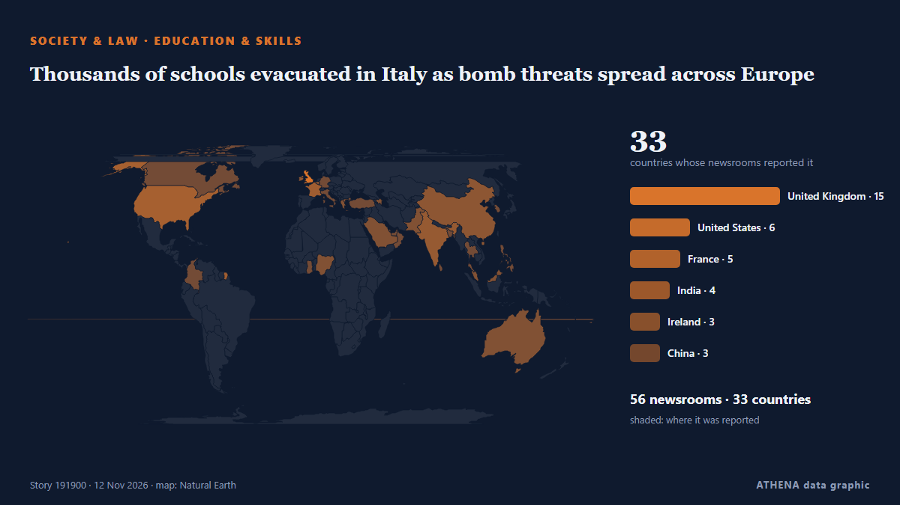

Thousands of schools evacuated in Italy as bomb threats spread across Europe

European officials suspect Russia may be behind a campaign of disruption to everyday life in European nations. de Express Tribune
Relayé de façon indépendante par 57 médias dans 33 pays depuis le 11 nov. ; premier à l'annoncer : Express Tribune ; la couverture faiblit. ATHENA juge le risque élevé (6.0/10), surtout en raison de la gravité des dommages décrits et de sa portée géographique et sectorielle. La confiance est de 91 % (élevée) : 57 médias indépendants le confirment, avec une fiabilité moyenne des sources de 74 %. Médias par pays : Royaume-Uni (13), États-Unis (3), Pakistan (2). Couverture : du 11 nov. au 11 nov., 8 heures.
Pourquoi c'est important: Les changements juridiques et politiques modifient droits, obligations et services publics pour les personnes concernées.
Ce qui a changé : 37 nouveaux articles de 33 rédactions dans les 24 heures jusqu'au 12 nov..
Premier titre : Government says ‘no need to evacuate’ after hundreds of schools receive bomb threat emails
Les titres sont affichés en anglais, tels que publiés.
Comment lire cette page
- Ce que vous lisez
- 57 médias dans 33 pays ont rapporté cet événement. Les reportages ci-dessous sont classés selon leur ordre de parution ; chaque titre ouvre l'article original. ATHENA n'écrit aucun reportage.
- Notre lecture
- Pour mémoire — Les reportages décrivent une affaire terminée, intérieure, commerciale ou personnelle. Nous la consignons pour que vous voyiez qui l'a rapportée et quand. Nous ne suivons pas ici de risque de conflit plus large.
- Quelle base de preuves
- Solide De nombreux médias indépendants, dans de nombreux pays, décrivent le même événement.
Après retrait des doublons, des éléments hors sujet et périmés, 24 des 40 reportages listés sont retenus ; 100 % des titres correspondent à l'événement.
- Ce que cela ne veut pas dire
- ATHENA mesure la façon dont un événement est rapporté, pas sa véracité. Ce n'est ni une prévision, ni un jugement sur qui a raison, ni un conseil.
- Ce qui la changerait
- Des reportages d'autres médias indépendants montrant une évolution différente, ou une confirmation ou un démenti ferme d'une source officielle.
Lecture R2 · actualisée à chaque mise à jour de cette page. ATHENA n'a pas encore publié de bilan de ces lectures ; il sera lié ici le moment venu.
En un coup d'œil
Sélectionné, noté et rédigé par la méthodologie publiée d'ATHENA. Aucun rédacteur n'intervient sur un événement en particulier. Comment il est produit ›
| 11 Nov 07:09 UTC | 1 |
|---|---|
| 11 Nov 09:09 UTC | 8 |
| 11 Nov 11:09 UTC | 19 |
| 11 Nov 13:09 UTC | 15 |
| 11 Nov 15:09 UTC | 5 |
| 11 Nov 17:09 UTC | 6 |
| 11 Nov 19:09 UTC | 7 |
| 11 Nov 21:09 UTC | 2 |
| 11 Nov 23:09 UTC | 1 |
| 12 Nov 01:09 UTC | 2 |
| 12 Nov 03:09 UTC | 1 |
| 12 Nov 05:09 UTC | 1 |
| 12 Nov 07:09 UTC | 0 |
| 12 Nov 09:09 UTC | 1 |
| 12 Nov 11:09 UTC | 1 |
| 12 Nov 13:09 UTC | 1 |
| 11 Nov 11:36 UTC | 0.0 |
|---|---|
| 11 Nov 11:44 UTC | 5.0 |
| 11 Nov 14:01 UTC | 6.5 |
| 11 Nov 16:58 UTC | 6.2 |
| 11 Nov 20:13 UTC | 6.7 |
| 11 Nov 22:18 UTC | 6.2 |
| 11 Nov 23:07 UTC | 6.7 |
| 12 Nov 00:06 UTC | 6.2 |
| 12 Nov 13:26 UTC | 6.0 |
Pourquoi ces chiffres
Importance
Risque
Confiance
La couverture : qui l'a annoncé, et quand
titre tel que publié · ouvre l'original- Express Tribune · PakistanHoax bomb alerts sent to schools in Italy, UK and Ireland in latest disruption
- The Scotsman · Royaume-UniScottish Schools Evacuated RECAP: Hundreds of pupils evacuated after suspected 'hoax' bomb threats
- The Herald (Scotland) · Royaume-UniAll Edinburgh schools evacuated on Wednesday morning over 'threatening messages' hoax
- To Vima (English) · GrèceHoax Bomb Emails Hit Schools In Italy, Ireland and Scotland
- The Herald (Scotland) · Royaume-UniSchools across Scotland evacuated after hoax threat made
- TheJournal.ie · IrlandeGovernment says ‘no need to evacuate’ after hundreds of schools receive hoax bomb threat emails
- The Straits Times · SingapourBomb hoaxes empty over 300 Italian schools as threats reach Scotland and Ireland
- France 24 English · FranceWave of hoax bomb threats sent to schools in UK, Ireland and Italy
- The Scotsman · Royaume-UniPolice Scotland issue response after schools evacuated due to threatening 'hoax' messages
- Evening Standard (London) · Royaume-Uni‘Urgent inquiries’ after threatening email sent to hundreds of schools
- The Straits Times · SingapourHoax bomb alerts sent to schools in Italy, UK and Ireland in latest disruption
- The Irish News (Belfast) · Royaume-UniNorthern Ireland schools receive second hoax email threat in a month
- Times of India · IndeOver 6,000 schools in Italy get bomb threats; similar warnings in UK & Ireland
- The Scotsman · Royaume-UniSchool bomb threats: Everything you need to know so far
- APA (English) · AzerbaïdjanAt least 300 Italian schools evacuated after email bomb alerts
- Irish Mirror · IrlandeWhat we know so far as RTÉ and schools targeted again in email bomb threat
- New Straits Times · MalaisieSchools evacuated across Italy after bomb threats
- Manchester Evening News · Royaume-UniPolice respond after threatening emails sent to hundreds of schools across the UK
- Gulf News · Émirats arabes unisSchools evacuated across Italy after bomb threats
- The Independent · Royaume-UniSome 300 Italian schools evacuated due to bomb threats
- The Irish News (Belfast) · Royaume-Uni300 Italian schools evacuated due to bomb threats
- BBC News · Royaume-UniSchools in Italy, Scotland and Northern Ireland hit by threats in suspected bomb hoax
- Evening Standard (London) · Royaume-UniPolice treating threatening messages sent to schools in UK as hoaxes
- News of Bahrain · BahreïnItaly on alert as bomb threats force school evacuations
- CNBC World · États-UnisHundreds of schools in Italy, UK evacuated over 'hoax' bomb threats
- The Business Standard (Bangladesh) (working feed) · BangladeshHoax bomb alerts sent to schools in Italy, UK and Ireland in latest disruption
- The National Herald · États-UnisSome 300 Italian Schools Evacuated Due to Bomb Threats
- Le Monde (English) · FranceItaly evacuates schools after bomb threats
- Evening Standard (London) · Royaume-UniPolice treat threatening email sent to hundreds of NI schools as ‘hoax’
- Dawn · PakistanHoax bomb alerts sent to schools in Italy, UK, Ireland in latest disruption
- Euractiv · BelgiqueSchools evacuated across Italy after bomb threats
- Al Jazeera English · QatarSchools across Italy evacuated after receiving email bomb alerts
- NDTV · Inde300 Schools In Italy Evacuated After Bomb Threat Emails From 'Misoginistan'
- ABC News (International) · États-UnisSome 300 Italian schools evacuated due to bomb threats
- DW English · AllemagneItaly: Hundreds of schools evacuated after bomb threats
- Free Malaysia Today · MalaisieHoax bomb alerts sent to schools in Italy, UK and Ireland
- The Korea Times · Corée du SudBomb alerts sent to schools in Italy and Northern Ireland in latest threats
- China Daily — page reader · ChineSeveral schools in Rome evacuated after emailed bomb threats: media
- Türkiye Today · TurquieHundreds of schools evacuated across Italy after emailed bomb threats
- Ada Derana · Sri LankaHoax bomb alerts sent to schools in Italy, UK and Ireland in latest disruption